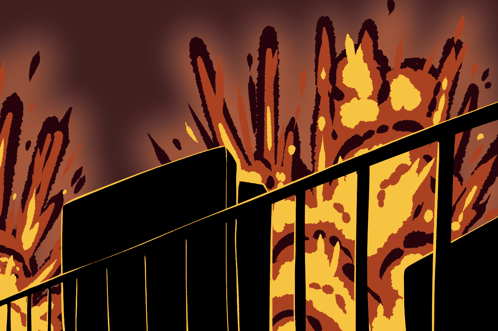

McGruff’s Military UAS Demonstration Gone Wrong
A Military Demonstration for Unmaned Aerial Systems ended in several casualties, including the death of the US President, Paul McGruff.
April 24, ███5, 08:21 pm

A photograph of the explosion taken during the UAS Military Demonstration taken in Virginia, ██████████████, April 20 ████
People have been anticipating just what President McGruff would bring to the table
after he had won the elections. Others have been bracing themselves for the worst
to come of these next four years.
Just a month ago, McGruff had announced a Military Demonstration. This was to show America’s
quick and efficient military progress. The showcase was supposed to be an introduction to the
US’s plans on improving on the current lineup of UAS (Unmanned Aerial Systems.)
Five UAS were showcased in the Military Demonstration:
Four UAS being current aerial systems (The General Atomics
MQ-9 Reaper, The AeroVironment Wasp III, Northrop Grumman
RQ-4 Global Hawk, and the Lockheed Martin RQ-170 Sentinel.)
The four have set the basis of drones that will be getting
improvements in the next few years.
The last UAS to be showcased was a new and improved model
of the MQ-9 Reaper: Lockheed Martin MQ-10 Grim.
The development of the MQ-10 Grim was passed onto Lockheed
Martin to finish, and has been in the making since February
of ███5. The new model has been upgraded to have a longer
endurance than the MQ-9 Reaper, now being able to stay in
the air for up to 45 hours.
More details about what equipment can be fitted onto the MQ-10 Grim can be found here.
Despite the improvements on its older counterpart, the production cost of the
MQ-10 Grim has become far more affordable, at the price of $24 Million per unit.
The demonstration was only open to be attended by
military personnel, US officials, and invitees by
the President. But it was broadcast live for the
public to view.
There were approximately 60 military personnel, 100
civilians, 3 US officials, and the president in attendance.
The first four showcases went without incident.
The impressive capabilities of these drones were
presented with a flight test, a speed test, and an
ordnance test.
The ordnance test was to be done in an empty open field,
with the audience situated a safe distance away from the
blast zone.
Aside from the ordnance test, there should be no safety concerns, right?
Unfortunately, McGruff failed to see or prepare for the possibility of malfunction.
During the last showcase, the MQ-10 Grim, ended up in a disaster. While the flight
test was underway, the drone had ‘lost control’ and flown straight toward the president,
and shot its missiles uncontrollably.
The incident has led to several casualties and injuries.
President McGruff had died alongside 24 military personnel and 37 civilians.
16 more military personnel, 21 civilians, and 2 government officials were left injured.
The Military Demonstration was cut short by the accident. And
the final showcase had truly ended up being McGruff’s last.
But what would that mean for the US?
With McGruff’s passing, Vice President Portia Bailey from the Developmentalist
Party will be taking over the title of President.
We mourn the loss of the 61 lives lost in the incident, and the loss of our president.
A nation-wide funeral service will be held for Paul McGruff tomorrow, April 25 ███5.